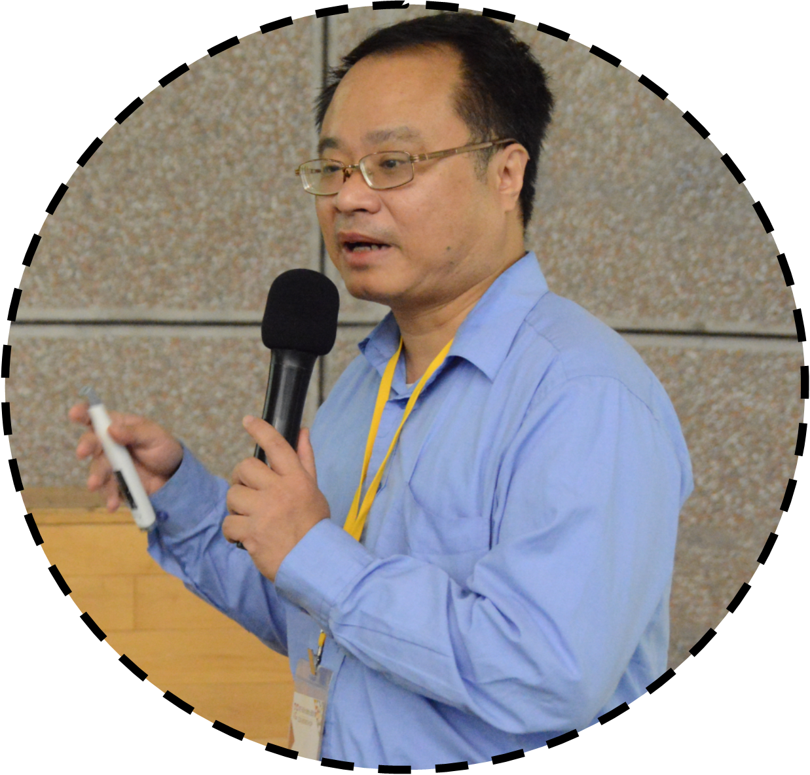

| 黃世旭 教授 電子郵件：shhuang@cycu.edu.tw 分機號碼：(03)265-4611 |
 |
| 學校名稱 | 國別 | 主修學門系所 | 學位 | 起訖年月(西元年/月) |
| 國立台灣大學 | 中華民國 | 資訊工程研究所 | 博士 | 1991/09 至 1995/06 |
| 國立清華大學 | 中華民國 | 資訊科學研究所 | 碩士 | 1989/09 至 1991/06 |
| 國立交通大學 | 中華民國 | 資訊工程學系 | 學士 | 1985/09 至 1989/06 |
| 服務機構 | 服務部門／系所 | 職稱 | 起訖年月(西元年/月) |
| 中原大學 | 車用電子與可靠度研究中心 | 主任 | 2013/03 迄今 |
| 中原大學 | 電子工程學系 | 教授 | 2009/08 迄今 |
| 中原大學 | 電子工程學系 | 系主任 | 2008/08 至 2012/07 |
| 中原大學 | 電子工程學系 | 副教授 | 2005/08 至 2009/07 |
| 中原大學 | 電子工程學系 | 助理教授 | 2000/02 至 2005/07 |
| 工業技術研究院 | 電通所積體電路設計部 | 副經理 | 1999/07 至 2000/02 |
| 工業技術研究院 | 電通所設計自動化發展部 | 課長 | 1997/11 至 1999/07 |
| 工業技術研究院 | 電通所設計自動化發展部 | 工程師 | 1995/10 至 1997/11 |
電子設計自動化 (Electronic Design Automation)
積體電路設計 (IC Design)
積體電路測試 (IC Testing)
硬體安全 (Hardware Security)
人工智慧 (Artificial Intelligence)
| 擔任國際研討會之Organizing Committee Member，包括ISQED-2015及 ISQED-2016之 Global Representative (Chair, Taiwan)、SASIMI-2015之 Publicity Chair。 | |
| 歷年來曾擔任國內外多個研討會之Technical Program Committee Member，包括 ASPDAC (Asia and South Pacific Design Automation Conference)、ISQED (International Symposium on Quality Electronic Design)、IEEE Computer Society Annual Symposium on VLSI、IFIP International Conference on Embedded and Ubiquitous Computing、ACM Symposium on Applied Computing、International Computer Symposium、VLSI Design/CAD Symposium。 | |
| 擔任DAC、ICCAD、APCCAS、VLSI-DAT、TENCON、ASPDAC、ISCAS 等國際會議 Session Chairs。 | |
| 於 2013 及 2014 年，擔任 IEEE Taipei Section 之 Student Activities Chair。 | |
| 於 2016 年擔任 ACM SIGDA Taiwan Chapter 的 Vice Chair。 | |
| 擔任教育部 2015 CAD Contest計畫主持人，承辦 2015 CAD Contest 國內賽及國際賽，並擔任 2015 CAD Contest at ICCAD 之 Contest Co-Chair。 | |
| 擔任教育部 2016 CAD Contest計畫主持人，承辦 2016 CAD Contest 國內賽及國際賽，並擔任 2016 CAD Contest at ICCAD 之 Contest Chair。 | |
| 2015 年擔任「台灣車用電子協會」成立之發起人，目前擔任該協會理事。 | |
| 2017至 2018年擔任科技部 AI 創新研究中心專案計畫推動辦公室共同主持人。 | |
| 2018 年 8 月起擔任臺灣積體電路設計學會 (TICD) 理事。 | |
| 2018 年 5 月起擔任中華民國消費電子學會 (TCES) 理監事。 |
2016© EDA Lab. All rights reserved.